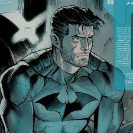

Batman[a] is a superhero appearing in American comic books published by DC Comics. The character was created by artist Bob Kane and writer Bill Finger, and debuted in the 27th issue of the comic book Detective Comics on March 30, 1939. In the DC Universe continuity, Batman is the alias of Bruce Wayne, a wealthy American playboy, philanthropist, and industrialist who resides in Gotham City. Batman's origin story features him swearing vengeance against criminals after witnessing the murder of his parents Thomas and Martha as a child, a vendetta tempered with the ideal of justice. He trains himself physically and intellectually, crafts a bat-inspired persona, and monitors the Gotham streets at night. Kane, Finger, and other creators accompanied Batman with supporting characters, including his sidekicks Robin and Batgirl; allies Alfred Pennyworth, James Gordon, and Catwoman; and foes such as the Penguin, the Riddler, Two-Face, and his archenemy the Joker.
